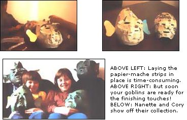

Make Your Own Halloween Masks!
Mother's Children
By Nanette Stewart
September/October 1984
MOTHER feels strongly that youths can be creative "doers," working toward more ecological and self-reliant lifestyles ...whether their tasks be raising chickens on a farm or maintaining rooftop container gardens in the city. To support the endeavors of our often overlooked "underage" citizens, we're glad to publish well-written articles from younger children and teenagers concerning projects they've undertaken. However, we recommend that all young authors query (that is, send us a letter telling about the story they'd like to do) before writing afull article. Address inquiries to Mother's Children, THE Mother Earth News(restricted) , 105 Stoney Mountain Rd., Hendersonville, NC 28791.
My brother Cory and I create our own Halloween masks. We decided to make them because we didn't think the ones in the store were worth the money they cost. They were all either expensive or poorly made. Our mom liked the idea and suggested we make our masks with papier-mache (a French word that literally means "chewed paper") so we could use up some of the old newspapers around the house.
To make the masks we needed to buy some medium-size pear-shaped balloons, wallpaper paste, white glue, masking tape, and paint. (We already had lots of newspapers.) You can make your own scary or funny face, too! Here's how.
Tear up lots of newspaper into long strips about half an inch wide. Next, blow up a balloon until it's a little bit larger than your own head.
Work up a batch of wallpaper paste by mixing two parts powder to ten parts water. Then pull the strips, one at a time, through the paste and stick them to the inflated balloon. Keep adding layers to the balloon until the papier-mache is about five strips thick ...but be sure to leave a small, uncovered opening at the bottom. Hang the strip-covered balloon from the bottom to dry until the covering gets very hard.
When the paper's all dry, pop the balloon and pull it through the hole. Then cut out that hole some more, making it just big enough so you can slip on the unfinished mask. Once it's on your head, get somebody with a felt-tipped pen to help you mark exactly where your eyes, nose, and mouth line up with the mask. Then take the papier-mache head off and carefully cut out those openings. Put masking tape around the holes to keep the mask from scratching your face.
Now it's time to add the supports for the facial details. To make eyebrows or lips, twist a stick of newspaper and hold it in place with masking tape. Egg carton cups or paper cones can be taped on to make a nose, horns, chin, or even goggle eyes. If you'd like your creature to look real brainy, wad up two big balls of newspaper and tape them on top. Big ears are fun to add, too, but you'll have to use stiff cardboard to make those.
Fasten all your additions to your mask by covering the head with more glued paper strips. One or two more layers will be enough. After that, you'll have to hang the mask again and let it dry for another day.
While your Halloween creation is drying, you can start the next stage: making the soft mash you will cover, it with. Tear up at least four large newspaper sheets into small pieces. Cover them with water and leave them to soak overnight. The next day, boil the mixture for 20 minutes or until it becomes a soft pulp. (If you stir the boiling mash, it will "cook" faster.) Once the paper's all turned to pulp, let the pot cool for a while.
Now cover a sieve with an old cotton rag and dump the pulp in. Squeeze the towel to remove extra water and produce a soft, wet lump. Put the pulp in a big bowl and mix in two tablespoons of wallpaper paste and two tablespoons of liquid white glue. Stir the sticky mixture until you've gotten rid of all the lumps.
Apply the mash all over your mask. Don't put much on the ears, though, or they'll probably collapse. Cory and I just put a little mash around the base of our masks' ears.
You can smooth the wet guck out with your hands. My brother and I didn't smooth ours too much, because we wanted our masks to have lizardlike skins. If you want a smoother surface, you can stick on some tissue paper with wallpaper paste or sand the mask with fine sandpaper after the mash has dried.
Once the mask is perfectly dry (which will take at least two more days), you can paint it. We used enamel spray paints and made our masks white and yellow, with a light overcoat of green. If you don't have any spray paint around, you can use any water-based paint and just spray the finished dry surface with a clear vinyl sealer. [EDITOR'S NOTE: Use any spray paints or sealers outdoors and under adult supervision.]
All in all, it took Cory and me two weeks to make our masks, but we didn't hurry because we wanted to do a really nice job on them. Our work paid off, too. Our masks were a big hit at school. All the kids liked them. We even won the costume parade!
We had the most fun on Halloween night, though. Everywhere we went, people made a big fuss over us. They took our pictures and even gave us extra treats!
The only problem Cory and I have found with the masks is that it's much easier to see where you're going if you just wear face makeup instead. Our mom always goes out trickor-treating with us, though, so she helped us get around all right.
Making your own mask is fun, costs next to nothing, uses up old newspapers, and can give you your best Halloween ever! (It did for me!) Now I have people asking me to make masks for them. Hey! Maybe I've found a good bootstrap business idea!
 Here's a gruesome quartet of homemade papier-mache gremlins that would be sure to liven up any creative youngster's Halloween. |
 |
|